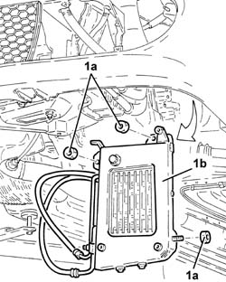
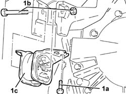
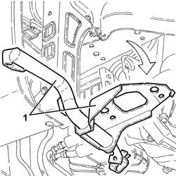
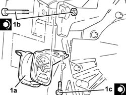

2130A58 Automatic transmission fluid cooling radiator mounting BRACKET - R.R.
- Path
- Procedures > 21 GEARBOX > 2130 AUTOMATIC TRANSMISSION AND DIFFERENTIAL > 2130A automatic transmission assembly > 2130A58 Automatic transmission fluid cooling radiator mounting BRACKET - R.R.
- Kind
- repair procedure (removal / refitting; the operation number is the code)
- Applies to
- engines: 2.5 V6; all production periods
- Interactive page
- https://sloeber94.github.io/elrnDB-a156/en/#/3237990
Applies to: engines: 2.5 V6; all production periods; only with equipment: Q-System
 Removing
Removing
 Refitting
RefittingPosition the vehicle on the ramp.
Ensure that the ignition key is in the OFF position, then disconnect the negative (-) battery terminal.
 | Name | Connector |
|---|---|---|
- | Battery |
4450B10 Front WHEEL (one) - R.R.
7055B64 Engine compartment DUST shield in front wheel arch (one), left or right - R.R.
7055B42 Additional FRONT WHEEL ARCH (one), left or right - R.R.
2130A20 automatic transmission fluid cooling fan - r r
7055B54 under-engine guard - r r Guard beneath engine].
5540D10 l/h or r/h fog lamp (one) - r+r
2130A60 air shroud on automatic transmission fluid cooling radiator - r r
1. Undo bolts (1a) and move the mounting complete with automatic transmission fluid radiator (1b) without disconnecting the pipes.

Applies to: engines: 2.5 V6; all production periods; only with equipment: Q-System
Position a hydraulic jack under the gearbox.
1. Undo the bolts (1a) and (1b), then remove the flexible mounting for the automatic transmission side rigid support (1c).

Applies to: engines: 2.5 V6; all production periods; only with equipment: Q-System
1. Recover the mounting bracket for the automatic transmission radiator fluid.

Applies to: engines: 2.5 V6; all production periods; only with equipment: Q-System
Refitting
RemovingPlace the automatic transmission radiator fluid mounting bracket back in its housing.
1. Refit the flexible block on the automatic transmission side power unit rigid support (1a) and tighten the bolt (1b) and bolts (1c) to the specified torque.
 | Fastening | Component | Ø | Value (daNm) |
|---|---|---|---|---|
1b | Bolt | POWER UNIT GEAR BOX END RIGID MOUNT | - | (Flexible mounting side) - |
| Fastening | Component | Ø | Value (daNm) |
|---|---|---|---|---|
1c | Bolt | GEARBOX SIDE RUBBER MOUNT | - | (Bodyshell side) |

Applies to: engines: 2.5 V6; all production periods; only with equipment: Q-System
Remove the hydraulic jack from under the gearbox.
Place the mounting back in its housing complete with automatic transmission fluid radiator and secure with the bolts.
2130A60 air shroud on automatic transmission fluid cooling radiator - r r
5540D10 l/h or r/h fog lamp (one) - r+r
7055B54 under-engine guard - r r Guard beneath engine].
2130A20 automatic transmission fluid cooling fan - r r
7055B42 Additional FRONT WHEEL ARCH (one), left or right - R.R.
7055B64 Engine compartment DUST shield in front wheel arch (one), left or right - R.R.
4450B10 Front WHEEL (one) - R.R.
Connect the negative (-) battery terminal.
Remove the vehicle from the ramp.
Topics linked from this page (8)
- 2130A20 automatic transmission fluid cooling fan - r r
- 2130A60 air shroud on automatic transmission fluid cooling radiator - r r
- 4450B10 Front WHEEL (one) - R.R.
- 5540D10 l/h or r/h fog lamp (one) - r+r
- 7055B42 Additional FRONT WHEEL ARCH (one), left or right - R.R.
- 7055B54 under-engine guard - r r
- 7055B64 Engine compartment DUST shield in front wheel arch (one), left or right - R.R.
- A1B Battery ( BATTERY NEGATIVE )